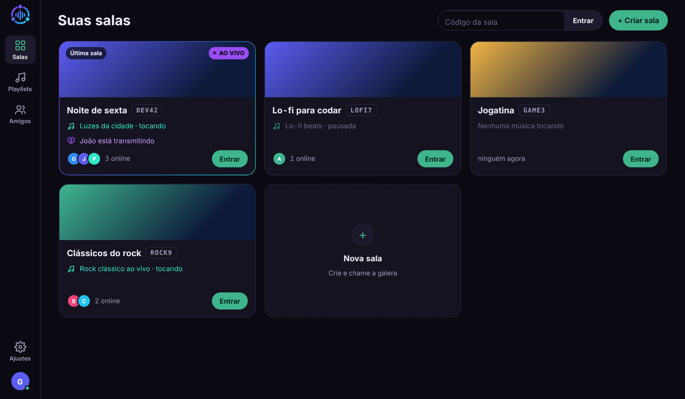

App para Windows
Transmita a sua tela.
Transmita a sua tela.
Assista e ouça junto numa janela só.
A sala completa numa janela própria: música, transmissões e bate-papo. Só pelo app dá para transmitir a tela.
Windows 10 e 11 · grátis
Instalação
Baixe, abra e entre.
- Abra o arquivo baixadoO app se instala sozinho no seu usuário, cria o atalho no menu Iniciar e abre.
- Aviso do Windows?Se aparecer “O Windows protegeu o computador”, clique em Mais informações e depois em Executar assim mesmo.
- Entre na sua contaUse a mesma conta do site. Se o navegador já estiver logado, basta um clique.
Por que o aviso do Windows? O app ainda não tem assinatura digital, que é paga. O aviso aparece só na primeira vez.
No app
O que muda em relação ao navegador.
Transmitir a telaEscolha uma janela ou a tela inteira, a resolução e os fps. O som do próprio app não vai junto.
Atualiza sozinhoQuando sai uma versão nova, aparece uma faixa com o botão Atualizar. O app baixa, troca e reabre.
Recebe da extensãoO botão da extensão do Chrome pode mandar a música direto para a sala aberta no app.
Sempre logadoAbriu o app, já está nas suas salas.
DesinstalarPelo Windows, em Configurações, Apps instalados, SpectraCast.